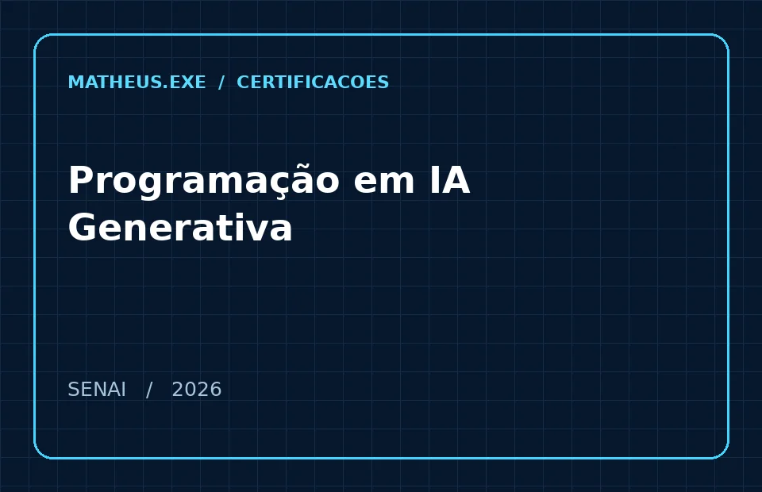
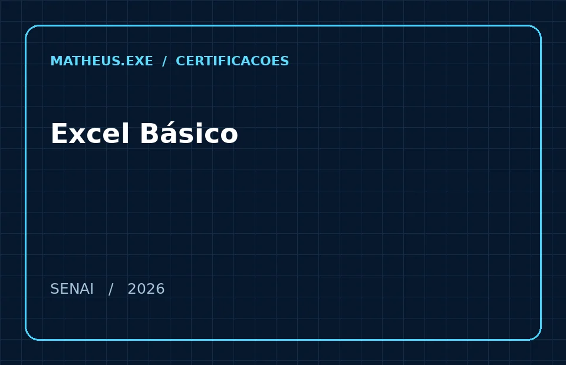
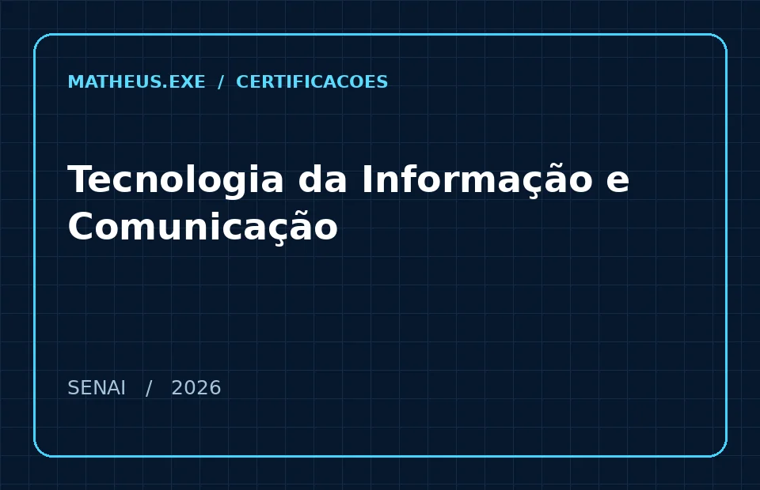
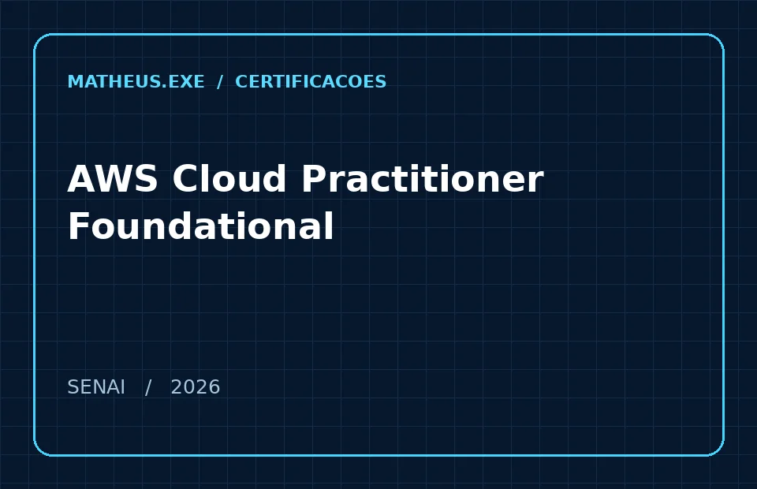
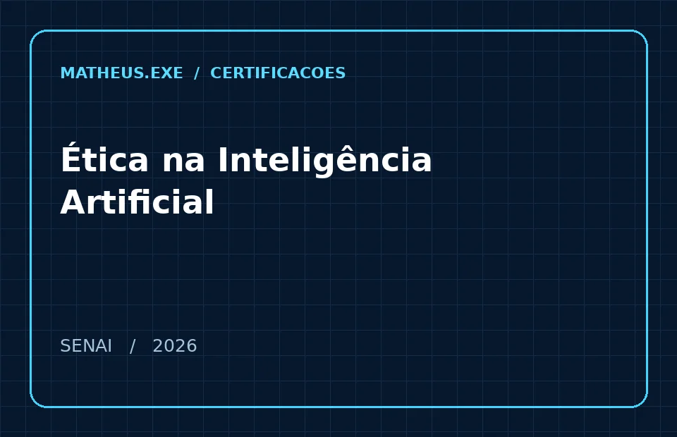
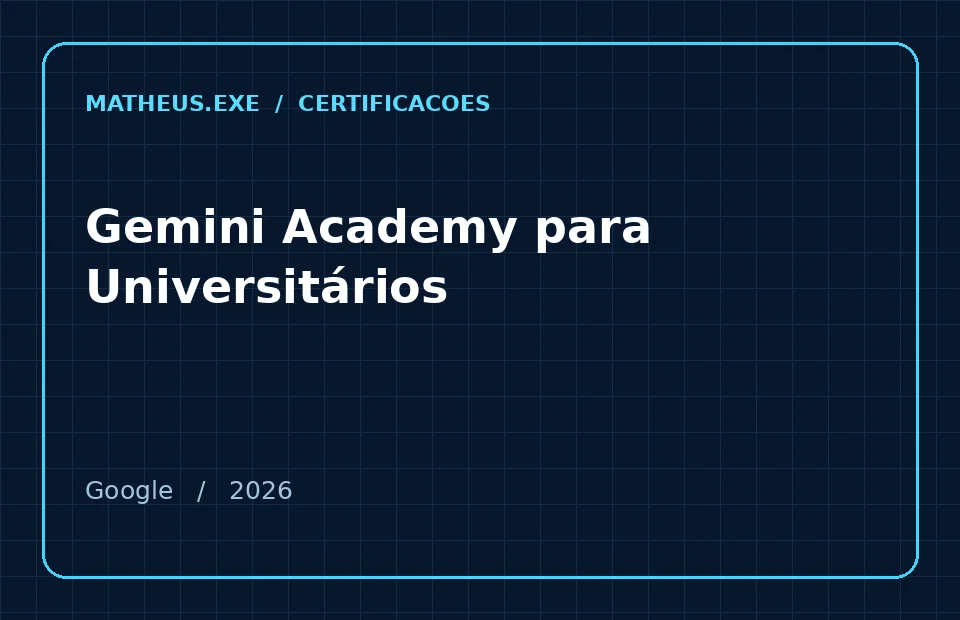
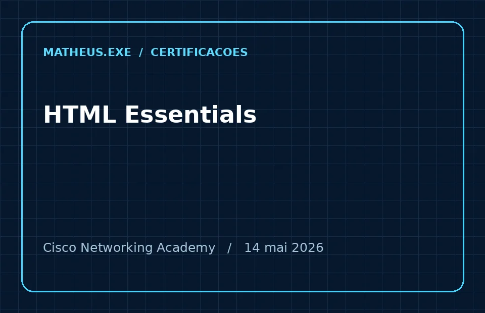
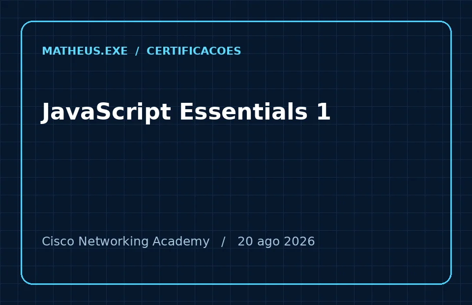

01 / 082026 ↗

IA & AUTOMAÇÃO
Programação em IA Generativa
SENAI · 40 horas · 2026
CONCLUSÃO REGISTRADA ✓[ 005 / ACHIEVEMENTS ]
Formação complementar em tecnologia, desenvolvimento web, inteligência artificial e computação em nuvem.

IA & AUTOMAÇÃO
SENAI · 40 horas · 2026
CONCLUSÃO REGISTRADA ✓
PRODUTIVIDADE
SENAI · 20 horas · 2026
CONCLUSÃO REGISTRADA ✓
TECNOLOGIA
SENAI · 14 horas · 2026
CONCLUSÃO REGISTRADA ✓
CLOUD COMPUTING
SENAI · 40 horas · 2026
CONCLUSÃO REGISTRADA ✓
IA RESPONSÁVEL
SENAI · 4 horas · 2026
CONCLUSÃO REGISTRADA ✓
IA & EDUCAÇÃO
Google · 2 horas · 2026
CONCLUSÃO REGISTRADA ✓
FRONT-END
Cisco Networking Academy · Concluído · 14 mai 2026
CONCLUSÃO REGISTRADA ✓
PROGRAMAÇÃO
Cisco Networking Academy · Concluído · 20 ago 2026
CONCLUSÃO REGISTRADA ✓*Soma das cargas horárias informadas nos seis certificados SENAI e Google (120h). Os certificados Cisco não informam carga horária. As imagens são cartões de apresentação, não reproduções dos documentos originais. Documentos originais e identificadores pessoais não estão publicados.